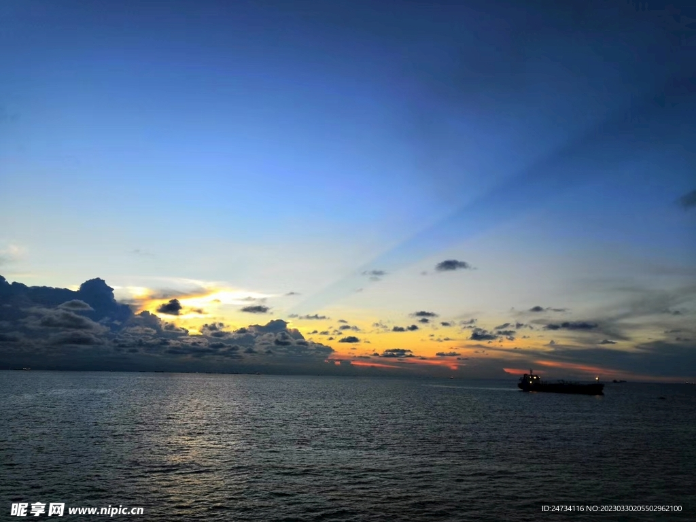
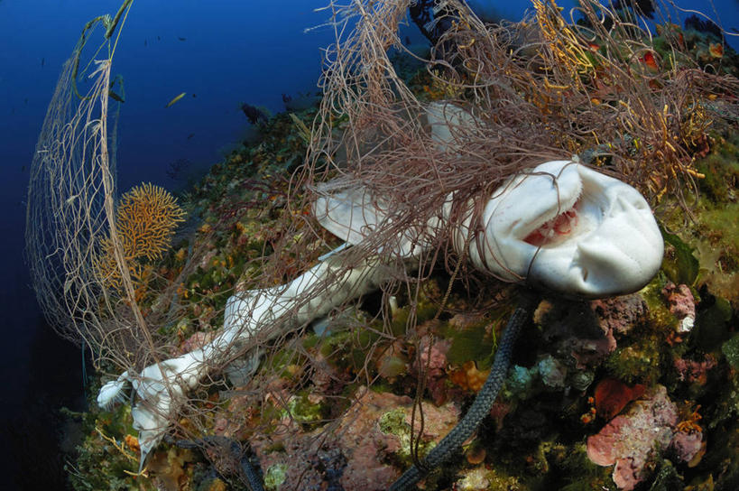
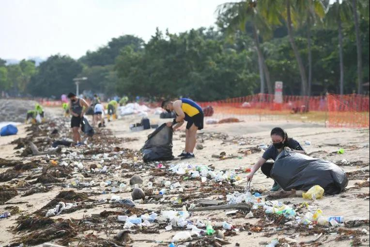

和大海
相遇的故事
第一次站在海边，听浪潮一遍遍拍打礁石，我们忽然懂得海洋的浪漫与脆弱。 蔚蓝之下，不仅有美丽的生命，也正在发生我们不能忽视的改变。
初见：浪潮带来的触动
第一次认真凝望大海，是在一个黄昏。潮水安静漫上沙滩，又缓缓退去，留下细碎泡沫。 以前只在视频里见过蔚蓝，直到站在岸边，听见海浪持续不断的声响，才真切感受到海洋的辽阔。
那天我们沿着海岸线慢慢走，看见礁石缝隙里躲藏的小生物，也看见被潮水冲上岸的塑料瓶、碎渔网。 美好的画面和刺眼的垃圾放在一起，心里很不是滋味。也正是那一刻，萌生了想要做点什么的想法。

深入：藏在蔚蓝之下的危机
后来我们查阅了很多海洋保护资料，慢慢了解到那些看不见的困境。 全球变暖让海水温度不断升高，大片珊瑚礁发生白化，曾经五彩斑斓的珊瑚群落慢慢失去生机。
海洋里的微塑料顺着食物链流动，从浮游生物，到小鱼，再到大型海洋动物，最终形成难以逆转的伤害。 很多海洋生物会误把塑料袋当成水母吞下，废弃渔网缠绕住海龟、海豹，让它们无法游动、无法觅食。

行动：搭建一座小小的窗口
我们想做一个安静、治愈的网页，不喊空洞的口号，只是把海洋的美好呈现出来。 于是开始构思这个“亲近海洋”网站：首页留给壮阔海景，探索页面展示奇妙海洋生灵，日志记录观察与学习。
做网页的过程里，我们挑选图片、调整样式、反复修改跳转，努力让页面风格贴近大海给人的感觉：安静、深邃，又充满生命力。 我们希望打开页面的人，可以慢下来，好好看一看这片蓝色世界。

期许：守护是长久的事
一个网站改变不了全世界，但可以种下一颗小小的种子。 海洋保护不需要每个人都奔赴深海，它藏在日常的选择里：减少一次性塑料制品、不购买珊瑚与贝壳制品、不随意向河道海边丢弃垃圾。
浪潮会日复一日涌向海岸，海洋里的生命依旧在努力繁衍。 只要愿意多一份留意，多一份克制，蔚蓝就可以长久留存。大海的故事还在继续，而守护海洋这件事，期待有你一同参与。
